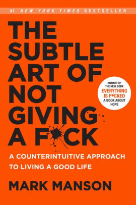
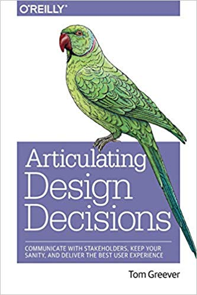
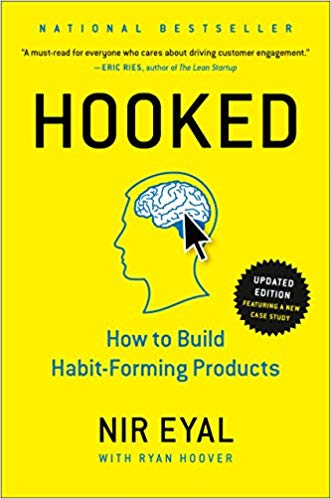
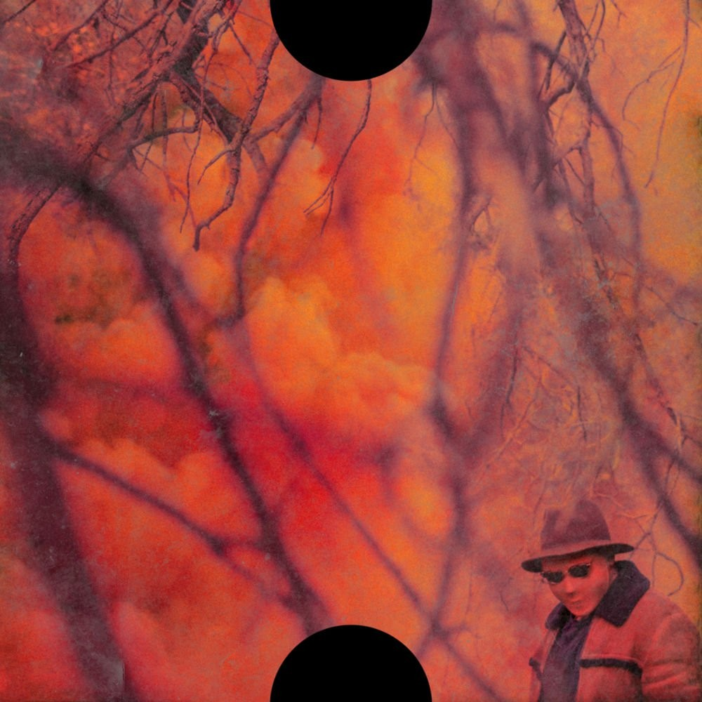
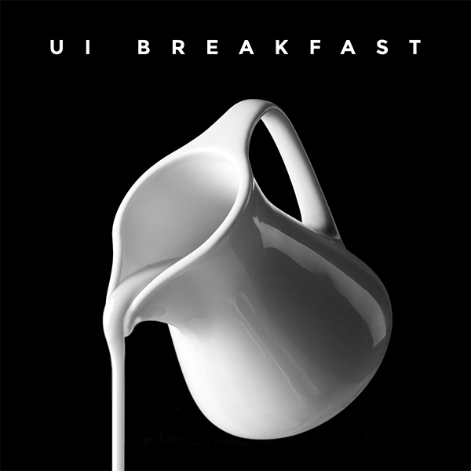

Books I recommend

The Subtle Art Of Not Giving a F*ck
This is an incredible motivational book. The main message is all about finding something important and meaningful in your life as the most productive use of your time and energy. This is true because every life has problems associated with it and finding meaning in your life will help you sustain the effort needed to overcome the particular problems you face. It is okay for things to suck some of the time, you just need to push past the pain and see the light at the end of the tunnel.

Articulating Design Decisions
As designers, one of our most important jobs is effectively communicating our designs to stakeholders. Designers have the ability and vision to shape the future. This guide does a great job focusing on principles and tactics for presenting your designs in an easy-to-use framework. To be a successful designer and leader, it’s important to win over anyone who has influence over the project--with the goal of creating the best experience for the end-user.

Don't Make Me Think
Steve Krug’s book was my first introduction to design. I think every designer should read this book. It focuses on usability and leans towards a common-sense approach to UX. I always come back to it when thinking about how a user will navigate a site and what their reading patterns are like online.
“Get rid of half the words on each page, then get rid of half what’s left”. — Steve Krug

Hooked: How to Build Habit-Forming Products
Hooked is an amazing read for those in product design, or just looking to understand their user and drive toward better customer engagement. Nir Eyal talks about the 4 stages of keeping consumers hooked to your product, the ‘hook cycle’: Trigger, Action, Variable Reward and Investment.
Music I'm Jammin' To

Podcasts I'm Listening To
